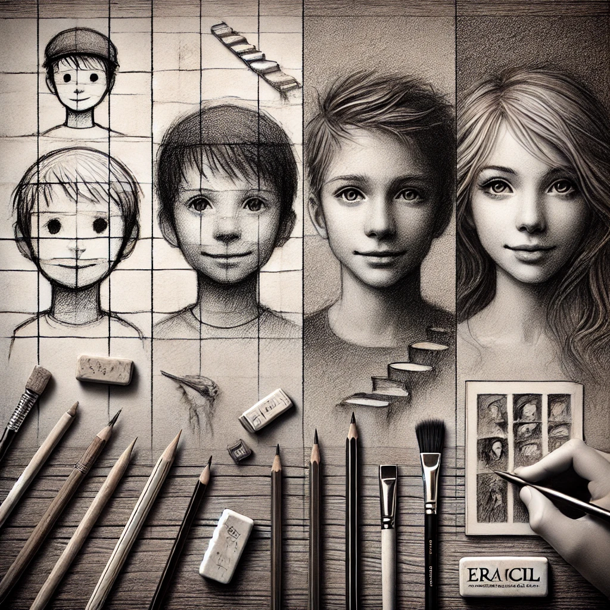

S hould start by saying that my sister was the one who first helped me with sketching and taught me everything I know about art when I was a little kid.
Just like any other kid, I started to sketch at a young age, doodling with stick figures and square houses. Those early sketches were the beginning of something much bigger. My passion and love for pencil sketching.
The Early Days
When I got serious about sketching, I mainly focused on portraits. And boy, oh boy! It was a humbling experience. Every face I sketched somehow ends up looking like a distant cousin! Regardless of who or whom I sketched, the end result was oddly similar. It was like I had one default face embedded in my brain, and let me tell you one thing: that face wasn’t great!
However, those early sketches are very important. They taught me the value and importance of patience and the importance of mighty erasers! Lots and lots of erasers.
The Love-Hate Relationship! A Struggle with Realism
As I got older and wiser, I started to focus more on realism. I wanted my portraits to resemble real living people and not like some cartoonist character. This is where the real challenge began.
It’s quite amazing how something simple as a lip or a nose can make or completely destroy your sketch! The slightest mistake can make it look like they had a bad nose job from a plastic surgeon. Don’t get me started on ears. Those tricky little things can make your life a living nightmare!
The Magic of Shading
At some point, things started to click. I am not sure if it was muscle memory or just sheer stubbornness, but my sketches began to improve. Shading became my ultimate secret weapon. Once I mastered how to control light and shadows, my portraits started to take on a life of their own!
Then came a plot twist in my shading journey. I met some ridiculously talented Iranian artists, mostly women, who absolutely blew my mind. These ladies weren’t just sketching—they were creating realism magic!
I am still amazed at how this “Arabic technique” opened up a whole new world of shading for me.
Where I Am Now: Always Learning
Unfortunately, with work taking up most of my time, I don’t have much space left for sketching anymore. Life as a software engineer is rewarding but definitely demanding. Still, I try to stay connected when I can.
Sketching has taught me more than just how to draw. It’s taught me persistence, patience, and how to keep going even when things don’t turn out the way you planned. And it’s still one of my favorite ways to unwind and express myself, even in small doses.
Here are some of my old sketches, showcasing my artistic journey.